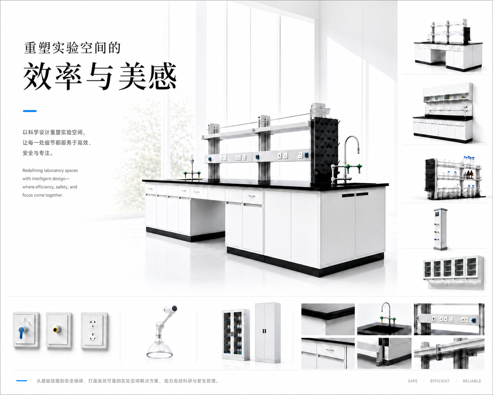
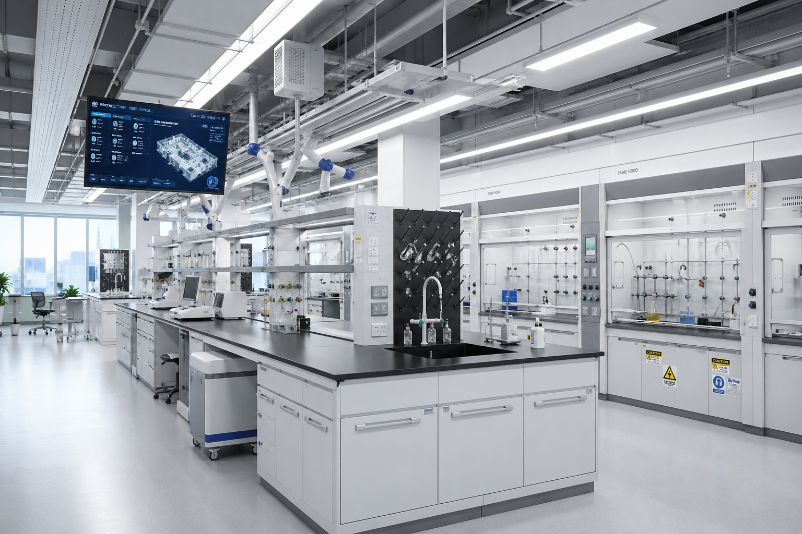
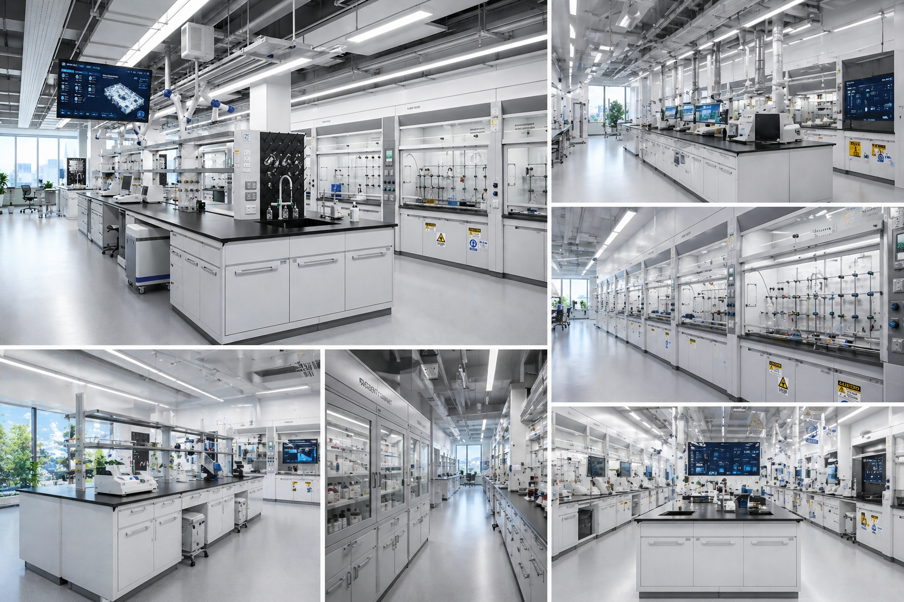
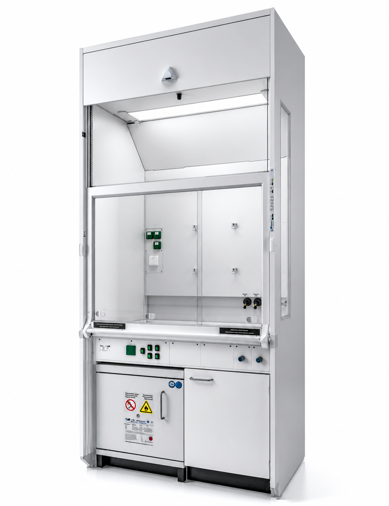

RAYHO
OPTION A / ATLAS
Spread Direction
让产品像画册一样被看见。
保留现有浅色高级感，但取消“左图右文”的企业站套路。图片是主角，文字只做旁注。
Precision Engineering
一张台面，承担实验室每天的高频使用。
不展开长文，只把客户判断产品可靠性的依据摆出来。
Worktop理化板 / 陶瓷 / 环氧树脂台面
Interface水、电、气接口与实验动线同步规划
Module中央岛台、边台、仪器台、天平台可组合


DETAIL / SOCKET
SURFACE / LOAD
OPTION B / SYSTEM SCAN
Spread Direction
把产品放回实验室系统里。
这版更接近“不是卖柜子，是做系统”。用真实实验室大图承载丰富度，文字变成扫描层和标注。

AIR / 负压与排风路径
MEP / 水电气接口
FLOW / 人员与样本动线
Lab Environment
真正高级的实验室，靠看不见的系统支撑。
用户看到的是整洁，真正决定体验的是空气、管路、动线和家具之间的协同。
01 / Air气流补风、排风和面风速共同决定安全边界。
02 / Flow动线人员、样本、试剂、废弃物互不干扰。
03 / MEP管路气体、纯水、废水和电气隐藏在空间里。
04 / Furniture家具台面、柜体、插座、龙头承担高频使用。
OPTION C / CONTINUOUS CANVAS
Spread Direction
不要做模块，做一段连续画布。
文字、项目图、产品海报和局部图叠在同一个版面里，丰富度来自层次，而不是更多卡片。
Precision Lab
从空间到产品，保持同一套秩序。
这版更像杂志跨页，适合承接首屏的高级感。
01 / PRODUCT实验室家具系统
02 / ENVIRONMENT实验室整体空间
03 / DETAIL台面、接口与管线

产品不再作为分类入口，而是作为系统中的关键部件出现。